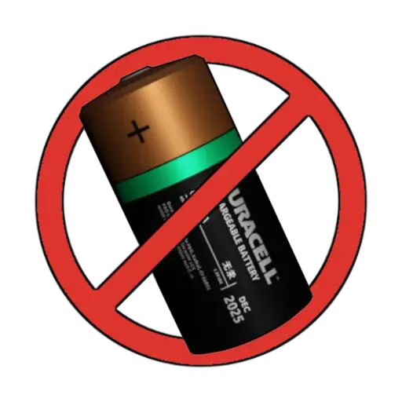

Batteries Not Included
- Downloads
- 2,942
- Favourites
- 18
- Mod lists
- 28
Batteries Not Included is a spiritual successor to the original BatterySystem mod by Jiro, continued by Birgere in his version of the mod for SPT 3.9.0.
Features
- Dedicated Battery Slots: All Headsets, Holographic/Reflex Sights, NVDs, and Tactical Devices, now feature dedicated battery slots
- Batteries: CR123A Battery which replaces the Rechargeable Battery, CR2032 Battery which replaces D Size Battery, and AA Battery
- Active Drain: Power is consumed when the device is switched ON. Batteries drain only in-raid
- Depletion Rate: Battery is drained based on the device’s manufacturer stated estimated battery life (if found) which is mapped to gameplay runtime
- Togglable Mechanic: Adds a new togglable component to devices for headsets and sights
- Device Description: Item description lists the required and number of batteries needed for the device to function; also indicated is the runtime of the device with a full charge
- Bot Batteries: Bots spawn with batteries for their devices, with a random charge that depends on the bot’s level if they’re a PMC, a Scav, or a Boss
- Configurable: Configuration is available server side and client side
Installation
- Extract the contents of the .zip archive into your SPT folder.
- Refresh item icons through the SPT Launcher,
Settings -> Clean Temp Files
 Thank you DrakiaXYZ for the gif
Thank you DrakiaXYZ for the gif
Configuration
Server Side
In the config.jsonc file:
globalDrainMultiplier- A global drain multiplier applied. A higher value results in a faster drain. Default is1.0minGameRuntime- Minimum game runtime for devices in seconds. This is equivalent to real 1 hour runtime. Default is900 seconds (15 minutes)maxGameRuntime- Maximum game runtime for devices in seconds. This is equivalent to real 100,000 hours runtime. Default is9,000 seconds (2.5 hours)botBatteries- Adjust battery charge spawned for bots. Default for PMCs min:50; max:100, Scavs min:20; max:60siccContainerBatteries- Allow batteries in the SICC Case if enabled. Default istrue.
In the customDevices.jsonc file:
- This file is used for adding device properties for custom items from mods - Specifies which battery a device uses, with how many batteries are needed to operate, and the battery life of the device in hours. See file itself for examples
Client Side
In the BepInEx configuration manager (F12)
Remaining Battery Tooltip- Shows the remaining runtime when hovering over a device. Default istrueLow Battery Interval- How often (in seconds) to check for low battery devices. Default is60 secondsLow Battery Threshold- Remaining runtime (in minutes) for a device to be considered low battery. Default is5 minutessSights Hotkey Enabled- If enabled, allows toggling sights of your current weapon using a hotkey. Default isfalseSights Hotkey- Hotkey used for toggling sights. Default isY
Compatibility
- Project Fika is compatible with the use of the sync addon
- FPV Drone Mod 0.5.0. Strictly version 0.5.0
- PAUSE 1.4.0. Incompatible if installed together with Fika
Compatible Content Mods
- Mods that add custom devices are compatible. They can be added in the
customDevices.jsoncconfiguration file. These will default to use CR2032 batteries, if not found. I will try as much to support all custom devices and fill in the required properties. - Artem 3.0.1
- C11 - True North 2.4.0
- Canted Aim 1.0.7
- Echoes of Tarkov - Requisitions - NG 2.0.4
- Eco’s Attachment Emporium 2.0.5
- ECOT - Eukyre’s Consortium of Things 1.3.2
- Epic’s All in One 4.0.6
- Impractical Tactical 1.2.0
- Peltor TEP-300 1.0.4
- WTT - Armory 2.0.2
- WTT - Content Backport 1.0.4
Support
If you find any bugs, issues, have feature suggestions or balancing suggestions, feel free to post them on the comment section, or open an issue on GitHub, or most preferably through the SPT Discord, ozen
Credits
- Thanks to Jiro for the existing bundles and especially for creating the original mod!
- Thanks to Birgere for allowing me to work on this, and for his version of the mod, which made porting and introducing changes easier!
- Thanks to SpawN_TellA for his help with testing and for the RU and DE locales!
- Thanks to Sayoki-Yukina for the ZH locale!
- Thanks to Gleneth for his help with testing!
If you enjoy my work, you can buy me a coffee ☕
Disclaimer: I will not be held responsible for any injuries resulting from the loss of optics, illumination, night vision, or active hearing. Please carry extra batteries.
Version
1.0.4
Added:
- Optional configuration to include batteries to devices sold by traders (Change mod name to Batteries Included)
Fixed:
- Batteries spawned for scavs/boss not marked as found in raid
- Rare race condition reported
- Bone errors in logs (suppressed)
Modified:
- Updated APBS compatibility (2.1.x)
- Removed trade restriction for Jaeger barter trade
- Updated mod compatibility with C11 True North (2.5.1)
- Removed obsolete code
Fika users need to update Fika Sync to the latest (1.0.3)
Version
1.0.3
Added:
- Low Battery Indicators, devices blink/notify when they’re low on batteries
- DE locale (Thanks @SpawN_TellA)
- Toggle sights hotkey
- FPV Drone 0.5.0 mod compatibility
- Pause 1.4.0 mod compatibility
- ECOT - Eukyre’s Consortium of Things 1.3.2 mod compatibility
Fixed:
- Scav runs not having any batteries for devices
- Rename locale zh.json to ch.json
Modified:
- Impractical Tactical 1.2.0 mod compatibility update
- Updated RU locale (Thanks @SpawN_TellA)
- External mod handling (client)
Version
1.0.2
Added:
- Added batteries to devices in Profile Templates (For creating new profiles)
- Traders can now buy batteries (QOL for selling items with batteries)
- ZH translation (Thanks Sayoki-Yukina!)
- APBS Compatibility
Fixed:
- Tactical devices runtime description
- Mod slot pool warnings from APBS
- Interchanged min-max for scav batteries
- Missing Fika Sync addon not failing gracefully
Modified:
- Updated mod compatibilities (Epic’s AIO 4.0.6, Eco’s Emporium 2.0.5, WTT-Armory 2.0.2, WTT-Backport 1.0.4, Impractical Tactical 1.1.0, Echoes of THE CITY 2.0.4)
- Updated RU translation (Thanks SpawN_TellA!)
- Notify in-game if the sync addon is missing while Fika is installed
Version
1.0.1
Added:
- See through optics when sight has no/drained batteries (e.g. holo sights with magnifiers)
- Tactical devices drain based on active mode (i.e. flashlight, laser, IR, etc.)
- RU language locale (thanks @SpawN_TellA!)
- Server locales
Fixed:
- Mod failing to initialize after entering the hideout then starting a new raid
- Sights not getting disabled when there’s more of the same sight in a player
- Lights not getting disabled when batteries are removed/drained on a corpse/ground
- Prepatch failing causing other prepatches to fail
- Loading into a raid with NVGs caused errors
Modified:
- Devices added to the NoBattery list
- Removed prepatch config dependent on server files
- Simplified config route
Huge thanks to SpawN_TellA for his help with testing!